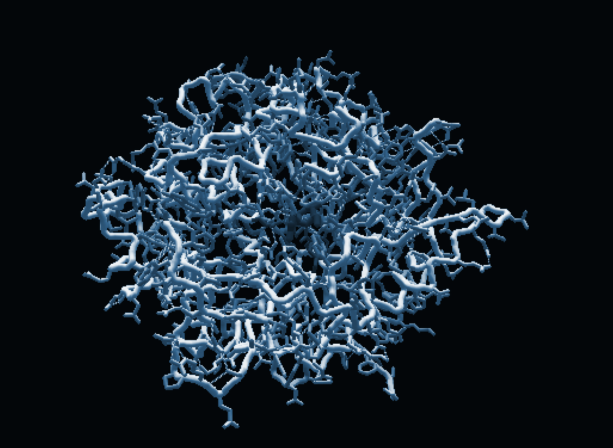
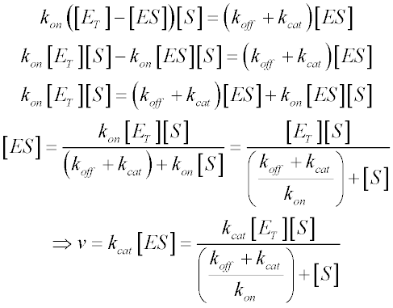

Introduction
Welcome to the Standardized Enzyme Engineering Knowledgebase. The goal of this project is to enhance the worlds understanding of enzymatic reactions and how mutations can affect their functionality. Not only can this program help to crowdsource for data on enzyme kinetics, it can be used as a teaching tool in High Schools or Universities for labs studying protein function.
Design
Learn the ins and outs of the computer program Foldit, and use it design mutated enzymes. Also included in this section is how to order mutant enzymes through Transcriptic® and how to make them yourself by using the protocol for Kunkel Mutagenesis.


Test
Learn the 5 day protocol used to test your mutated enymes in the lab, and how to gather the data from your experiment by using mass-spectrophotometry.
Analyze
Use our easy to use form to interpret the data you collected and compare it with existing data to determine the accuracy of your experiment.

Submit to SEEK
Ponder the implications of your data using the michaelis-menten curves provided by the program, and submit your findings for review and possible addition to the database.